R绘图 lattice包高级绘图
要点: lattice和ggplot2包极大地扩展了R绘图的范畴，提高了图形的质量。[R In Action(2nd Edtion), Chapter23]
R作图的目的：更好地理解数据，并能够与他人沟通这些理解方式。
Lattice包很容易生成网格图形，展示变量的分布或变量之间的关系，每个图代表一个或多个变量的各个水平。
lattice包提供了丰富的函数，可生成单因素图（点图、核密度图、直方图、条形图、柱状图和箱线图）、双变量图形（散点图、带状图和平行箱线图）和多变量图形（三维图和散点图矩阵）。
每个高水平的画图函数都服从这个格式: graph_function(formula, data=, options)
graph_function 是表1中的一个函数；
formula 指定要展示的变量和任意的调节变量；
data=指定数据框；
options 是用逗号隔开的参数，用来调节图形的内容、安排和注释（表2）。
#纽约合唱团中歌手的身高随着他们所属的声部如何变化？
library(lattice)
head(singer) #预览数据
histogram(~height|voice.part, data=singer,
main="Distribution of Heights by Voice Pitch",
xlab="Height (inches)")
#heigth是因变量，voice.part被称作条件变量（conditioning variable）
#对八个声部的每一个都创建一个直方图，男高音和男低音比女低音和女高音身高要高。

更多函数
我们假定小写字母代表数值型变量，大写字母代表分类型变量（因子）。高水平的画图函数通常采用的格式是：y ~ x | A * B
其中竖线左侧称为主要变量(primary variable)，右边的变量称为调节变量(conditioning variable)。
表1: lattice包中的图类型和相应的函数
| 图类型 | 函数 | 公式例子 |
|---|
| 3D等高线图 | contourplot() | z~x*y |
| 3D水平图 | levelplot() | z~y*x |
| 3D散点图 | cloud() | z~x*y|A |
| 3D线框图 | wireframe() | z~y*x |
| 条形图 | barchart() | x~A或A~x |
| 箱线图 | bwplot() | x~A或A~x |
| 点图 | dotplot() | ~x|A |
| 柱状图/直方图 | histogram() | ~x |
| 核密度图 | densityplot() | ~x|A*B |
| 平行坐标曲线图 | parallelplot() | dataframe |
| 散点图 | xyplot() | y~x|A |
| 散点图矩阵 | splom() | dataframe |
| 线框图 | stripplot() | A~x或x~A |
为了尽快对lattice图有一个认识，我们尝试运行下面的代码。里面的图基于mtcars数据框中的汽车数据（里程、车重、挡数、汽缸数等）。
其中ggplot2不能画3D图形，而lattice可以。
library(lattice)
attach(mtcars)
gear = factor(gear, levels = c(3, 4, 5),
labels = c("3 gears", "4 gears", "5 gears"))
cyl = factor(cyl, levels = c(4, 6, 8),
labels = c("4 cylinders", "6 cylinders", "8 cylinders"))
# 开始画图
densityplot(~mpg, main = "01-Density Plot",
xlab = "Miles per Gallon")
densityplot(~mpg | cyl, layout=c(3,1), #layout布局3列1行。行列顺序违背习惯！这一点很失败！
main = "02-Density Plot by Number of Cylinders",
xlab = "Miles per Gallon")
bwplot(cyl ~ wt | gear, layout=c(3,1),
main = "03-Box Plots by Cylinders and Gears",
xlab = "Miles per Gallon",
ylab = "Cylinders")
xyplot(mpg ~ wt | cyl * gear,
main = "04-Scatter Plots by Cylinders and Gears",
xlab = "Car Weight", ylab = "Miles per Gallon")
cloud(mpg ~ wt * qsec | cyl, layout=c(3,1),
main = "05-3D Scatter Plots by Cylinders")
dotplot(cyl ~ mpg | gear, layout=c(3,1),
main = "06-Dot Plots by Number of Gears and Cylinders",
xlab = "Miles Per Gallon")
splom(mtcars[c(1:6)],
main = "07-Scatter Plot Matrix for mtcars Data")
detach(mtcars)
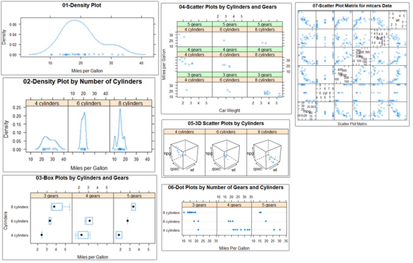
更多选项
lattice包中的高水平画图函数能产生可保存和修改的图形对象，例如：
library(lattice)
mygraph = densityplot(~height|voice.part, data=singer) #创建一个网格密度图，并把它保存为对象mygraph，但是没有图形展示
plot(mygraph) #或 print(mygraph) 将会显示该图。
class(mygraph)
##[1] "trellis"
通过调整选项很容易更改lattice图形，常见的选项列在下表中：
表2: lattice包高水平画图函数的常见选项
| 选项 | 描述 |
|---|
| aspect | 指定每个面板图形的纵横比（高度/宽度）的一个数字 |
| col、pch、lty、lwd | 分别指定在图中使用的颜色、符号、线类型和线宽度的向量 |
| group | 分组变量（因子） |
| index.cond | 列出展示面板顺序的列表 |
| key(或auto.key) | 支持分组变量中图例的函数 |
| layout | 指定面板设置（列数与行数）的二元素数值向量，如果需要，可以增加一个元素来表示页面数 |
| main、sub | 指定主标题和副标题的字符向量 |
| panel | 在每个面板中生成图的函数 |
| scales | 列出提供坐标轴注释信息的列表 |
| strip | 用于自定义面板条带的函数 |
| split、position | 数值型向量，在一页上绘制多幅图形 |
| type | 指定一个或多个散点图绘图选项（p=点、l=线、r=回归线、smooth=局部多项式回归拟合、g=网格图形）的字符向量 |
| xlab、ylab | 指定横轴和纵轴标签的字符向量 |
| xlim、ylim | 指定横轴和纵轴最小值、最大值的二元数值向量 |
可以在高级函数内部调用，或在面板函数中使用这些选项。
可以使用update函数来调整lattice图形对象。继续歌手的例子：
newGraph=update(mygraph, col='red', pch=16,
cex=0.08, jitter=0.05, lwd=2)
print(newGraph)
#红色曲线和符号(color),填充点(pch),更小的点(cex), 更高的抖动(jitter),双倍宽度的曲线(lwd)
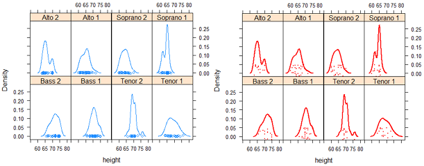
调节变量 Conditioning variables: equal.count
通常情况下，调节变量是因子。但是对于连续的变量该如何操作呢？一种方式是使用R的cut()函数将连续的变量转换为离散的变量，另一种方法是lattice包提供可以将连续变量转换为名为shingle的数据结构。具体来说，连续变量被分成一系列（可能）重叠的范围。
myshingle = equal.count(x, number=n, overlap=proportion) #将连续的变量x分成n个间隔，重叠的比例是proportion，每个间隔里的观测值个数相同，并将其返回为变量myshingle。
一旦变量转化为shingle，就可以用它作为一个调节变量。例如mtcars中的发动机排量是一个连续的变量，我们可以首先把它转换为3水平的shingle变量：
displacement = equal.count(mtcars$disp, number=3, overlap=0)
displacement
#Intervals:
# min max count
# 1 71.0 145.1 11
# 2 146.6 275.9 10
# 3 300.9 472.1 11
#接下来把它应用到xyplot()函数中：
xyplot(mpg ~ wt|displacement, data = mtcars,
main = "Miles per Gallon vs. Weight by Engine Displacement",
xlab = "Weight", ylab = "Miles per Gallon",
layout = c(3, 1), aspect = 1.5)
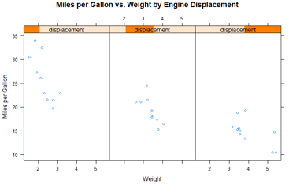
调节变量，就是把连续变量截断成离散变量。这里使用了选项来调整面板的布局（1行3列）和纵横比（高/宽）来让三组的对比变得更容易。
面板函数 Panel functions
每一个高水平的画图函数都采用了默认的函数来绘制面板图。默认函数遵循命名规则panel.graph_function，其中graph_function指的是高水平的函数，例如：
xyplot(mpg ~ wt | displacement, data=mtcars)
也可以写成：
xyplot(mpg ~ wt | displacement, data=mtcars, panel=panel.xyplot)
这是一个强大的功能，因为它可以让我们用自己设计的默认函数来代替默认的面板函数。我们也可以将lattice包50多个默认函数中的一个或者多个集成到我们自定义的函数中，自定义的面板函数在设计满足我们需求的输出时给了我们很大的灵活性。
#以汽车发动机排量为条件的汽车重量的油耗图，如果想要加上回归线、地毯图和网格线，怎么做呢？
library(lattice)
displacement = equal.count(mtcars$disp, number=3, overlap=0)
displacement
mypanel = function(x, y){
panel.xyplot(x, y, pch=19) #使用填充的圆(pch=19)产生散点图
panel.rug(x,y) #地毯图加到x和y轴的标签上。panel.rug(x,FALSE) 只在x轴上画；
panel.grid(h=-1, v=-1) # 添加水平和垂直的网格线。使用负数迫使其用轴标签排队//？
panel.lmline(x, y, col="red", lwd=1, lty=2) # 添加回归曲线。lty=2虚线；lwd=1标准厚度；
}
xyplot(mpg ~ wt|displacement, data=mtcars,
layout=c(3,1),
aspect=1.5,
main = "Miles per Gallon vs. Weight by Engine Displacement",
xlab = "Weight",
ylab = "Miles per Gallon",
panel = mypanel) #自定义的面板函数
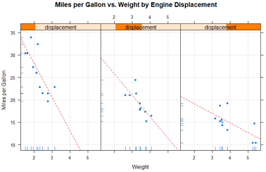
例2：画以汽车变速器类型为条件的油耗和发动机排量（被认为是连续型变量）之间的关系。自动和手动变速器发动机独立的面板图外，还添加拟合曲线和水平均值曲线。
library(lattice)
mtcars$transmission = factor(mtcars$am, levels=c(0,1), labels=c("Automatic", "Manual"))
panel.smoother = function(x, y){
panel.grid(h=-1, v=-1)
panel.xyplot(x, y) #画点图
panel.loess(x, y) #每个面板画出非参数拟合曲线
panel.abline(h = mean(y), lwd = 2, lty = 2, col = "darkgreen") #
}
xyplot(mpg~disp|transmission,data=mtcars,
scales=list(cex=.8, col="red"),
panel = panel.smoother,
xlab = "Displacement", ylab = "Miles per Gallon",
main = "MPG vs Displacement by Transmission Type",
sub = "Dotted lines are Groups Means", aspect = 1)
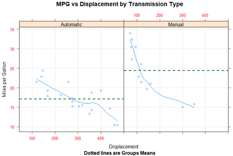
分组变量 Grouping variables: group
当你在lattice绘图公式中增加调节变量时，该变量的每个水平的独立面板就会产生。如果想添加的结果和每个水平正好相反，可以指定改变了为分组变量。
比如说，我们想利用核密度图展示使用手动和自动变速器时汽车的油耗的分布：
例1：
library(lattice)
mtcars$transmission = factor(mtcars$am, levels=c(0,1), labels=c("Automatic", "Manual"))
densityplot(~mpg, data=mtcars,
group=transmission,
main="1.MPG Distribution by Transmission Type",
xlab = "Miles per Gallon",
auto.key = TRUE) #产生图例，并默认放到图上方。
#例2：优先的修改图例
densityplot(~mpg, data=mtcars,
group=transmission,
main="2.MPG Distribution by Transmission Type",
xlab = "Miles per Gallon",
auto.key = list(space="right", columns=1, title="Transmission")) #图例放右侧，单列显示，添加标题
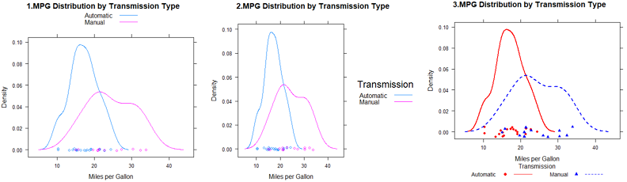
#例3: 对图例更大的控制权，可以使用key=选项
#指定颜色、线和点。
#每个向量第一个元素应用到分组变量第一个水平中，依次类推。
colors = c("red", "blue")
lines = c(1,2)
points = c(16, 17)
#自定义图例，包含水平名称text、点符号、线条类型和颜色
key.trans = list(title="Transmission",
space="bottom", columns=2, #图例底部，2列
text=list(levels(mtcars$transmission)),
points=list(pch=points, col=colors),
lines=list(col=colors, lty=lines),
cex.title=1, cex=.9) #图例标题略大于文本的符号
#密度图
densityplot(~mpg, data=mtcars,
group=transmission, #分组变量
main="3.MPG Distribution by Transmission Type",
xlab = "Miles per Gallon",
pch=points, lty=lines, col=colors, #指定和图例相同的图类型、线条类型和颜色。
lwd=2, jitter=.005, #线条宽度、抖动
key=key.trans) #为分组变量指定图例
在单个图中包含分组和调节变量的例子:
使用R自带CO2数据框，描述12种植物Plant的耐寒性，就是在7种二氧化碳浓度conc下的二氧化碳吸收率uptake。6种植物来自魁北克Quebec，6种来自密西西比Mississippi。每个产地有3种植物在冷藏条件下研究，3种在非冷藏条件下研究。在该例子中，Plant是分组变量，Type(2个产地)和Treatment(是否冷冻)是调节变量。
library(lattice)
colors = "darkgreen" #通过col指定一组颜色对分组进行区分，该例用12种颜色反而会分心。
symbols = c(1:12)
linetypes = c(1:3)
key.species = list(title="Plant",
space = "right",
text = list(levels(CO2$Plant)),
points = list(pch=symbols, col=colors))
xyplot(uptake~conc|Type*Treatment, data=CO2, #2来源*2处理共4组
group=Plant, #12种植物
type="o",
pch=symbols, col=colors, lty=linetypes,
main = "Carbon Dioxide Uptake\nin Grass Plants", #使用\n让标题分为2行
#ylab = "Uptake",
ylab=expression( paste("Uptake ", # 使用expression在坐标轴添加数学符号
bgroup("(", italic(frac("umol","m"^2)), ")")) ),
#xlab = "Concentration",
xlab=expression( paste("Concentration ",
bgroup("(", italic(frac(mL, L)), ")" ) ) ),
sub = "Grass Species: Echinochloa crus-galli",
key = key.species)

明显：在冷藏条件下，密西西比植物有显著不同。
目前，我们通过传递给高水平的函数(图 xyplot(pch=17))或面板函数(如 panel.xyplot(pch=17))的选项更改了图表中的图形元素。这些只在调用函数时起作用，怎么持续改变交互式进程或批处理图形参数呢？
图形参数 Graphic parameters：show.settings() 查看默认值
lattice图形不受par()函数的影响，它使用的默认设置在一个大的列表对象中，可以通过 trellis.par.get() 函数获得并通过 trellis.par.set() 函数更改。我们可以使用 show.settings() 函数来直观地展示当前的图形设置。
查看默认设置：show.settings()
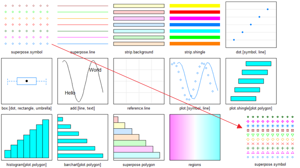
#我们想使用叠加点来改变默认符号(即包含一个组变量的图中的点)，默认值是一个开环。
#我们将为每个组设置自己的符号
# 把它们保存到列表标量中
mysettings=trellis.par.get()
#使用names()函数查看列表成分
names(mysettings)
## [1] "grid.pars" "fontsize" "background"
## [4] "panel.background" "clip" "add.line"
## [7] "add.text" "plot.polygon" "box.dot"
## [10] "box.rectangle" "box.umbrella" "dot.line"
## [13] "dot.symbol" "plot.line" "plot.symbol"
## [16] "reference.line" "strip.background" "strip.shingle"
## [19] "strip.border" "superpose.line" "superpose.symbol"
## [22] "superpose.polygon" "regions" "shade.colors"
## [25] "axis.line" "axis.text" "axis.components"
## [28] "layout.heights" "layout.widths" "box.3d"
## [31] "par.xlab.text" "par.ylab.text" "par.zlab.text"
## [34] "par.main.text" "par.sub.text"
#叠加符号的默认值包含在：
mysettings$superpose.symbol
#$alpha
#[1] 1 1 1 1 1 1 1
#$cex
#[1] 0.8 0.8 0.8 0.8 0.8 0.8 0.8
#$col
#[1] "#0080ff" "#ff00ff" "darkgreen" "#ff0000" "orange" "#00ff00"
#[7] "brown"
#$fill
#[1] "#CCFFFF" "#FFCCFF" "#CCFFCC" "#FFE5CC" "#CCE6FF" "#FFFFCC" "#FFCCCC"
#$font
#[1] 1 1 1 1 1 1 1
#$pch
#[1] 1 1 1 1 1 1 1
# 分组变量的每个水平使用的符号是开环(pch=1)。七个水平得到定义后，符号会再循环。
#为了改变默认值，声明语句
mysettings$superpose.symbol$pch=c(1:10)
trellis.par.set(mysettings)
#查看改动的影响
show.settings() #见上图最右下角
pch=1开环代表分组变量第一个水平，pch=2开三角代表分组变量的第二个水平，以此类推。
在图形设备关闭之前，这些变化一直起作用。
类似的方法，可以改变任意的图形设置。
自定义图形条带 Customizing plot strips: strip函数
面板条带默认的背景是：第一个调节变量时桃红色，第二个调节变量时浅绿色，第三个调节变量的浅蓝色。我们可以自定义颜色、字体和这些条带的其他方面。使用上一节描述的方法；或是加强控制，写一个自定义条带各方面的函数。
就像lattice的高水平图形函数允许控制每个面板的内容指定一个面板函数一样，条带函数可以自定义条带的方方面面。
library(lattice)
histogram(~height|voice.part, data=singer,
main="1.Distribution of Heights by Voice Pitch",
xlab="Height (inches)") #和图1一样，略
#自定义顶部条带
histogram(~height | voice.part, data = singer,
col=c("chocolate2", 'seagreen'), #设置bar的颜色循环
strip = strip.custom(bg="lightgrey", #背景默认桃红色-粉橙色，改为浅灰色；
#条带文本颜色，缩小40%，斜体
par.strip.text = list(col="chocolate", cex=.6, font=3)),
main = "2.Distribution of Heights by Voice Pitch",
xlab = "Height (inches)")
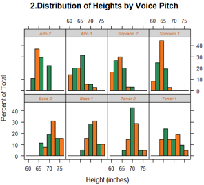
strip=选项用来指定设定条带外观的函数。尽管我们可以从头写一个函数（参见 ?strip.default），但是改变一些设置并使用其他项的默认值更简单。
strip.custom()函数可以帮助我们实现: bg选项控制了背景颜色; par.strip.text允许我们控制条带文本的外观, col控制颜色，cex控制大小，font数值1、2、3、4分别代表正常字体、粗体、斜体和粗斜体。
strip=选项改变了给定图形中条带的外观。要改变一个R会话中所有lattice图形的外观，使用上一节的图形参数:
mysettings = trellis.par.get()
mysettings$strip.background$col=c("lightgrey", 'lightgreen')
trellis.par.set(mysettings)
show.settings() #查看当前参数的效果
使用图形参数，则会话结束前、或被再次修改前一直有效。而使用条带函数strip则对当前绘图提供更多选项和更强的控制权。
页面布局 Page arrangement
lattice 函数不能识别par()函数设置。多图绘制一个图中，最简单的方案是保存图对象，并使用带有split或position选项的plot函数来绘制图片。
split选项将一个页面分成指定数量的行和列，并把图放到结果矩阵的特定单元格。split选项的格式是：
split = c(x, y, nx, ny)
也就是在包括nx乘以ny个图形的数组中，把当前图形放在x,y的位置，图形的起始位置是在左上角。
library(lattice)
graph1 = histogram(~height | voice.part, data = singer,
main = "Height of Choral Singers by Voice Part")
graph2 = bwplot(height~voice.part, data = singer)
plot(graph1, split = c(1, 1, 1, 2)) #lattice的行列和常规相反！(1,2)表示一共1列2行。
plot(graph2, split = c(1, 2, 1, 2), newpage = FALSE) #newpage=F 表示不新建页面
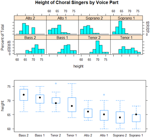
使用position=选项更好的控制尺寸和位置
plot(graph1, position = c(0, .3, 1, 1))
plot(graph2, position = c(0, 0, 1, .3), newpage = FALSE)
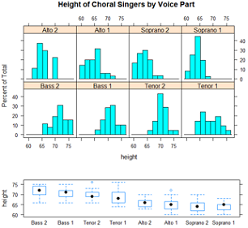
这里的position=c(xmin, ymin, xmax, ymax)选项中，页面的坐标系是x轴和y轴都从0到1的矩形，原点在左下角的(0,0)。更多放置图形的信息，查看 help(plot.trellis)
还可以控制面板的顺序
levels(singer$voice.part)
#[1] "Bass 2" "Bass 1" "Tenor 2" "Tenor 1" "Alto 2"
#[6] "Alto 1" "Soprano 2" "Soprano 1"
#高水平lattice图形函数中的 index.cond 选项能指定调节变量水平的顺序
histogram(~height | voice.part, data = singer,
index.cond = list(c(2, 4, 6, 8, 1, 3, 5, 7)) ) #把声部1(Bass1、Tenor1)放在一起，把声部2(Bass2、Tenor2)放在一起
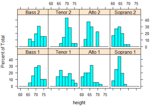
当有2个调节变量时，列表中包含2个向量。例如，添加 index.cond=list(c(1,2), c(2,1)) 把处理条件的顺序反过来。
查 help(xyplot) 了解更多 index.cond 选项的说明。
深入学习lattice: Going further
1. Deepayan Sarkar 的“Lattice Graphics: An Introduction”（http://mng.bz/jXUG, 2008）和
2. Willian G.Jacoby的“An Introduction to Lattice Graphics in R” （http://mng.bz/v4TO, 2010）提供了精彩的概述。
3. Sarkar(2008)的Lattice:Multivariate Data Visualization with R 是关于这个主题的权威图书。
4. Paul Murrell(2005)的R Graphics
5. Additionally, see the Trellis User's Guide.
Dr. Ihaka has created a wonderful set of slides on the subject.
6. To Practice
Try this interactive course on data visualization which covers lattice graphs.
https://www.jianshu.com/p/5885aaeda6c1
https://www.statmethods.net/advgraphs/trellis.html
http://master.bioconductor.org/help/course-materials/2008/advanced_R/latticeLab.pdf
https://livebook.manning.com/#!/book/r-in-action-second-edition/bonus-chapter-23-advanced-graphics-with-the-lattice-package/